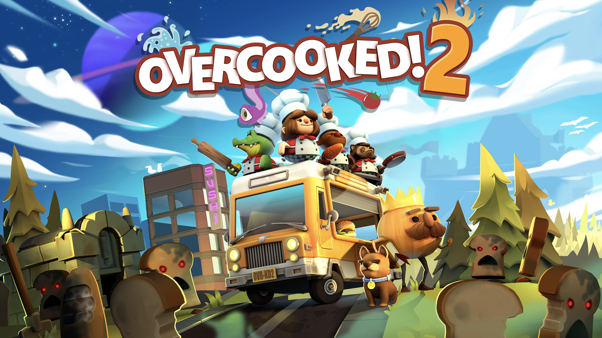

1.Paradox of Praxis 1 - Francis Alÿs
2.House & Restaurant - Junya ishigami

3. Overcooked



Spark AR Studio is an augmented reality platform for Mac & Windows that allows you to somewhat easily create AR effects for mobile cameras. Think of it like Photoshop or Sketch, but for AR.
Basically, PowerPoint is a presentation program developed by Microsoft. However, I saw one of my friends use this to do more creative thing beyond slide.
"TouchDesigner visualizes data flow through each step of the process. Perceive behavior at a glance and get instant visual feedback from your creation. Start thinking visually."